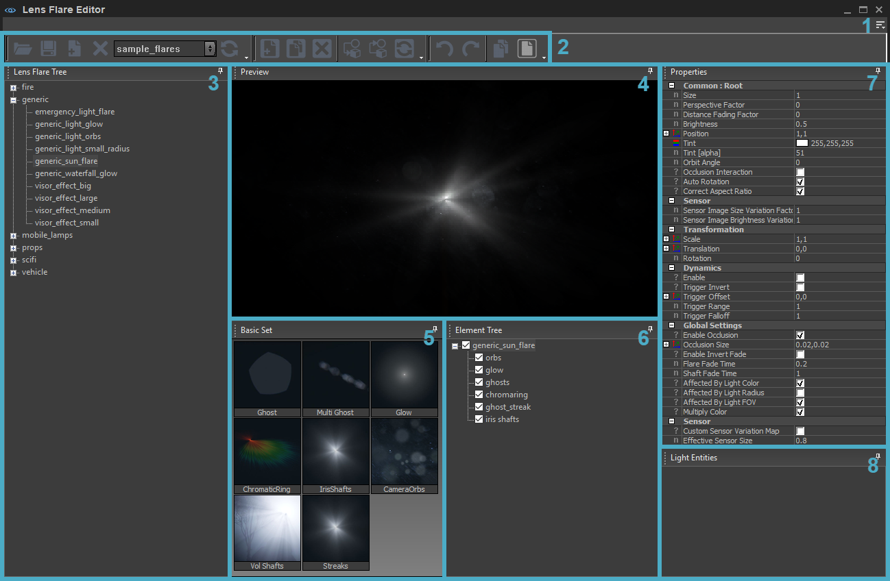
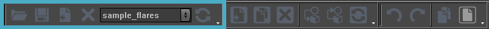
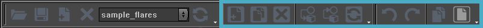
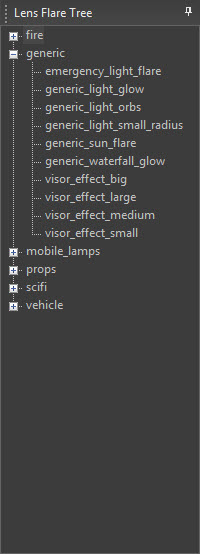
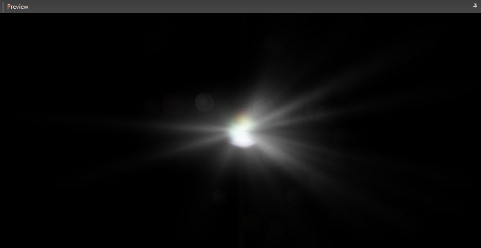
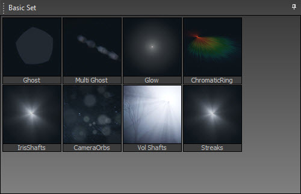
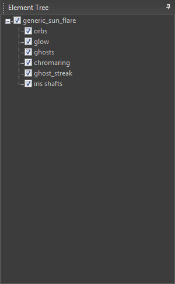
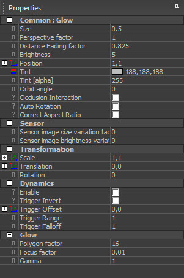
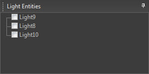
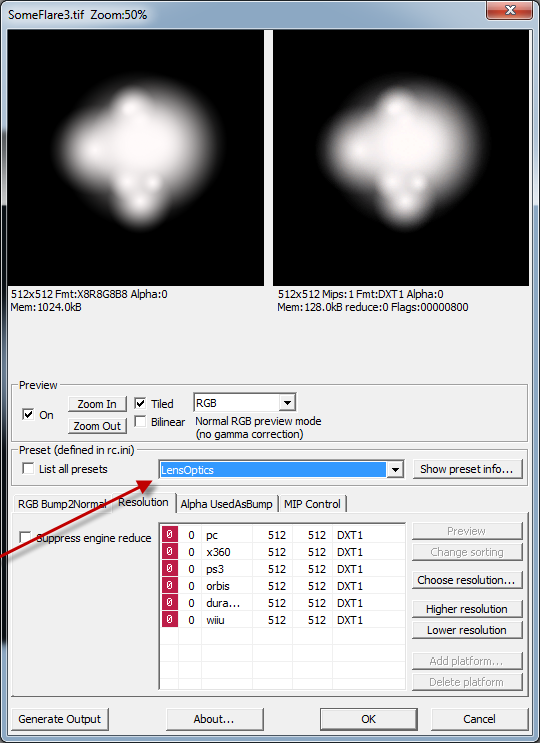

Overview
CRYENGINE's Lens Flare Editor can be used to create lens flare effects to enhance the atmosphere and the perception of light entities. With this tool, unique flare effects can be created, the parameters of the existing effects can be modified and they can be managed or stored easily.
The Lens Flare Editor can be found by going to Tools → Lens Flare Editor.
In order to use a Lens Flare item from any library, it is necessary to assign a lens flare effect to a light entity with the Assign Item to Selected Objects button on the toolbar. If the Lens Flare is to be attached to the sun, it can be done by selecting the light entity and choosing AttachToSun in the Properties tool.

1. Menu
The Menu can be accessed via the 
2. Toolbar
The toolbar can be divided into two main groups: the Library Control buttons and the Library Item Control buttons.
Library Control

Button | Description |
|---|---|
Load Library | Loads a library and adds it to the Library drop down List. |
Save Modified Libraries | Saves the changes made to the active library. |
Add Library | Adds a new, custom library. |
Remove Library | Removes the selected library. |
Library List | Drop-down list of libraries within the Lens Flare Editor. |
Reload Library | Reloads the active library. All changes that have been made since the last save will be lost. |
Item Control

Button | Description |
|---|---|
Add New Item | Adds a new item to the active library. |
Clone Library Item | Makes an exact copy of the selected item and pastes it in the same group. |
Remove Item | Deletes the selected item from the database. |
Assign Item to Selected Objects | Select an item in the 3D Viewport and assign the highlighted item in the database to the selection. |
Get Properties From Selection | Select an item in the 3D Viewport and this will open up the corresponding database and highlight the entry in the list. |
Reload Item | Reloads the selected item. |
Undo | Undoes the last action. |
Redo | Redoes a previously undone action. |
Copy Item | Copies the selected item. |
Paste Item | Pastes the copied item. |
3. Lens Flare Tree Window
A Lens Flare Item can contain several Lens Flare Elements, which are displayed on the Element Tree.

A Lens Flare Item is a basic unit that can be attached to a light entity. When an item is selected in the Lens Flare Tree, some of the other windows such as the Element Tree, the Preview panel and the Light Entities View will be updated automatically.
Context menu
When an item is right-clicked, a context menu will show up and it will display the following options:
Option | Description |
|---|---|
Cut | Cuts a selected item or group and saves it on the clipboard. |
Copy | Copies a selected item or group onto the clipboard. |
Paste | Pastes Lens Flare items or Elements from the clipboard. |
Clone | Copies an item or group and pastes the copy underneath it. |
Rename | Renames the selected item or group. |
Delete | Removes the selected item or group. |
Assign to Selected Objects | Assigns the selected lens flare item to the light entities selected in the Viewport. |
Select Assigned Objects | Selects all light entities with the selected Lens Flare Item. |
Copy Name to Clipboard | Copies the name of the selected item to the clipboard. |
4. Preview
When a Lens Flare item is selected in the Lens Flare Tree, it will be rendered in this window. Every time a property of each element of the Lens Flare is modified, it will be reflected in the Preview window.

The camera in this window can be moved by clicking and dragging the middle mouse button. Right-clicking in the window will re-focus the camera on the lens flare.
5. Basic Set Window
The Basic Set View is a set of atomic lens flare elements supplied by the engine.

The objective of this view is to add an atomic lens flare element to a selected Lens Flare item. One or more of these atomic elements can be added to the Element Tree by dragging and dropping them.
For detailed information about each atomic element, refer to the Optical Flare System article.
When a new atomic lens flare element is added to the item, it may be rendered in the Preview window. Unfortunately, some atomic elements won't be displayed at once due to limitations. In order for these to be shown, users should assign textures to the newly added element in the Properties window.
6. Element Tree Window
The Element Tree displays all the different elements that make up the selected Lens Flare item.

Context Menu
When the RMB is pressed over an item, a context menu will show up and display the following options:
Option | Description |
|---|---|
Add Group | Adds a group element. |
Cut | Cuts a selected item or group and saves it on the clipboard. |
Copy | Copies a selected item or group onto the clipboard. |
Paste | Pastes the element from the clipboard. |
Clone | Copies an item or group and pastes the copy underneath it. |
Rename | Renames the selected item or group. |
Delete | Removes the selected item or group. |
Delete All | Deletes all elements assigned to the selected item. |
Up | Moves the element up in the Element Tree. |
Down | Moves the element down in the Element Tree. |
7. Properties Window
When an element in the Element Tree window is selected, the properties of this element will be displayed in the Properties window.

Basically each type of atomic lens flare elements have their own properties defined in the engine. Each property of the selected element can be adjusted so that the flares looks exactly as desired.
Whenever a parameter is adjusted, the change will be displayed on the Preview panel and the light entities with the selected lens flare Item will be updated.
8. Light Entities Window
In this window, users can display the light entities that the selected lens flare item has been assigned to the current level.

When users double-click a light entity in the window, the light entity will be selected in the Viewport. If it is double-clicked again in the Light Entities Window, the camera in the Viewport will focus on that light entity.
When the name of a light entity in the Properties tool in the Main Window is changed, the change will be reflected in the Light Entities immediately as well. Deleting a light entity will have the same effect; meaning if it is deleted, it will disappear from the Light Entities window.
Copy/Cut and Paste
Users can either cut and paste items in the Lens Flare Tree and Element Tree or copy and paste them. There are two ways to do this: via the context menu or by dragging and dropping the item.
Copying and pasting or cutting and pasting via the context menu is fairly straightforward. First, right-click on the item and select either the Copy or Cut option, then right-click on the group or an item in that group to paste it on the designated location.
It's also possible to simply drag & drop the items. If it is done without holding any buttons except for the left mouse button, the item will be cut from one group and pasted into the other. If Ctrl is hold while dragging & dropping however, the item will be copied.
The Lens Flare Editor supports 6 different copy/paste cases;
- Lens Flare Item in the Lens Flare Tree between groups.
- Lens Flare Item from the Lens Flare Tree to the Element Tree.
- Lens Flare Group in the Lens Flare Tree.
- Lens Flare Group from the Lens Flare Tree to the Element View.
- Lens Flare Element(s) in the Element View.
- Lens Flare Element(s) from the Element View to the Lens Flare Tree.
Troubleshooting
- When working with lights on vehicles, updates to the flare won't be seen directly without restarting the Editor. To force an update for the vehicle flares, assign the edited flare to a light in the scene. This will force update checks.
- To attach a flare to the Sun, attach the Lens Flare to a light entity as usual, select the light entity in the Viewport, go to the Properties tool in the Main Window and check the AttachToSun box which is located at the very bottom of the Properties. This will then send the flare information to the sun. This should only be done on one light entity per level. Optionally, this light entity can also be set to FakeLight to prevent unwanted light casting from it. The flare will still remain active on the Sun.
- When creating new flares, make sure to use the LensOptics preset in the CryTif exporter when dealing with textures for the lens flare system. Using standard Diffuse preset will result in a blurry result because of unwanted mips.
